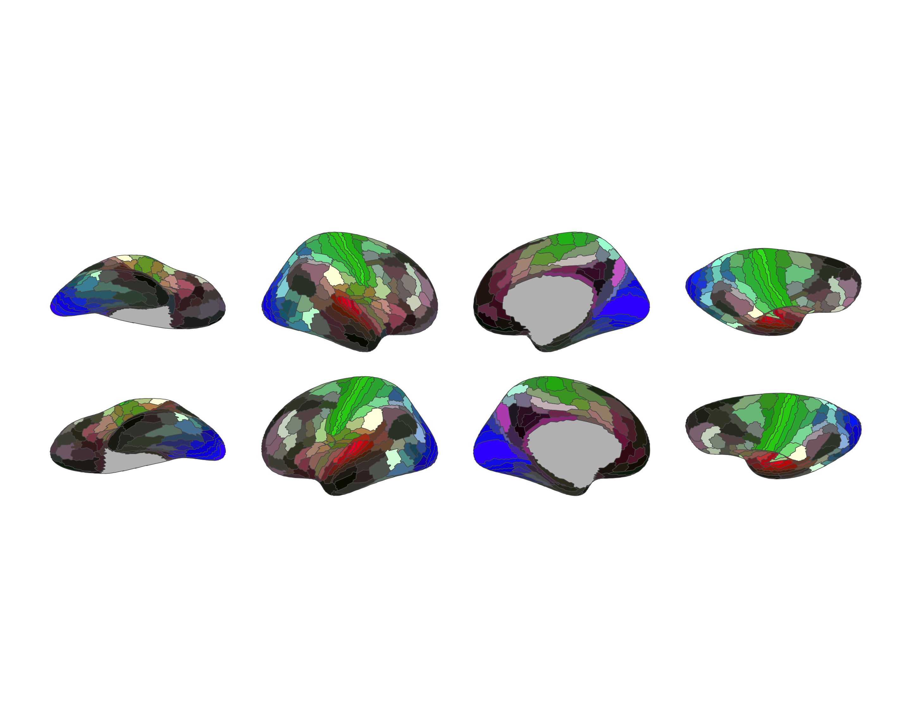

options(
repos = c(
ggseg = "https://ggseg.r-universe.dev",
CRAN = "https://cloud.r-project.org"
)
)
install.packages("ggsegGlasser")
This repository contains an R package with atlas data for ggseg and ggseg3d for the Glasser parcellation for HPC.
Glasser et al. (2016) Nature, volume 536, pages 171-178 pubmed
To learn how to use these atlases, please look at the documentation for ggseg and ggseg3d.
Installation
We recommend installing the ggseg-atlases through the ggseg r-universe:
And the development version from GitHub with:
# install.packages("remotes")
remotes::install_github("ggseg/ggsegGlasser")
Example
library(ggseg)
library(ggsegGlasser)
library(ggplot2)
ggplot() +
geom_brain(
atlas = glasser(),
mapping = aes(fill = label),
position = position_brain(hemi ~ view),
show.legend = FALSE
) +
scale_fill_manual(values = glasser()$palette, na.value = "grey") +
theme_void()

library(ggseg3d)
ggseg3d(atlas = glasser()) |>
pan_camera("right lateral")

Data source
HCP-MMP1 annotation files (fsaverage space, resampled to fsaverage5).
- Reference: Glasser et al. (2016) doi:10.1038/nature18933